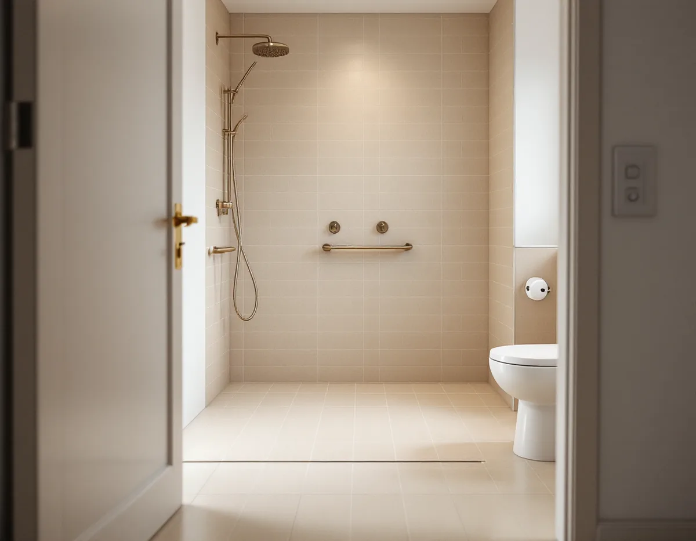
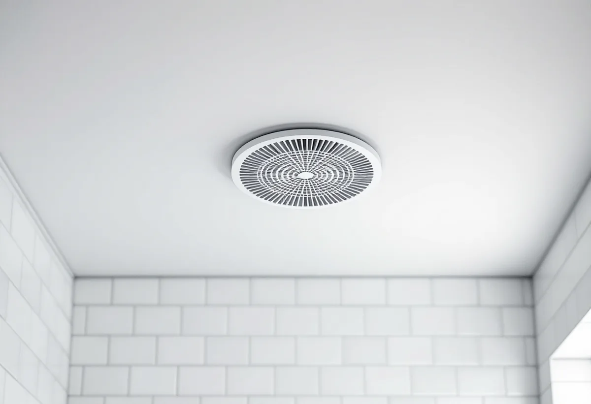

Platsbesök
Vi ser rummet, ventilationen och golvbrunnen och frågar hur badrummet ska användas.
Sigtuna kommun hade 7 387 bostäder i småhus 2024 enligt SCB, från villorna i Sigtuna stad till radhusen i Märsta. Badrummen där är ofta lika gamla som husen, och en renovering väcker samma frågor: vad kommunen behöver veta, hur fläkten ska fungera och om badkaret ska bli en dusch. Geal Entreprenad AB river, bygger tätskikt och samordnar VVS och el, med gratis platsbesök och skriftligt kostnadsförslag.

På kommunens sida om vatten och avlopp står att en anmälan behövs när du väsentligt ändrar eller gör en ny installation för vatten eller avlopp. Kommunen räknar en ändring som väsentlig när installationen påverkar husets bärande konstruktion eller när ett stambyte påverkar VA-stammarna.
Till anmälan bifogas en situationsplan på kommunens tomtkarta, en redovisning av vatten- och avloppsanordningarna, plan- och sektionsritning och konstruktionsritningar om bärande delar berörs. Ett förslag till kontrollplan ska alltid lämnas, och vid omfattande arbeten behövs även en kontrollansvarig. Tomtkartan går att ladda ner gratis utan inloggning.
Saknar fastigheten kommunalt avlopp är det strängare: att anlägga ett nytt eller ändra ett befintligt enskilt avlopp är tillståndspliktigt enligt miljöbalken. Vill du ansluta huset till det kommunala nätet görs anmälan till Sigtuna Vatten och renhållning.

Ett badrum behöver frånluft, och fläkten byts ofta samtidigt med resten av rummet. Enligt kommunens sida om ventilation ska både ett nytt ventilationssystem och en ändring av ett befintligt anmälas, och arbetet får börja först när startbeskedet har kommit. Innebär åtgärden en stor förändring av husets utsida, till exempel ett aggregat eller kanaler på fasaden, krävs bygglov i stället.
Till en anmälan om ventilation vill kommunen ha situationsplan, planritning, fasadritningar, förslag till kontrollplan och, om bärande delar berörs, konstruktionsritning och ett utlåtande från konstruktören. Vid större ändringar bedömer kommunen om det behövs en kontrollansvarig.
Att byta en trasig badrumsfläkt mot en likvärdig är något annat än att bygga om systemet. Vi tar reda på hur ventilationen i huset fungerar i dag, var frånluften går ut och om den nya lösningen kan behöva anmälas, innan något beställs. Ett badrum som får dusch i stället för badkar ger mer fukt i luften, och då ska fläkten orka ta hand om den.
Den som har en långvarig funktionsnedsättning kan söka bostadsanpassningsbidrag hos kommunen. Bland exemplen nämner Sigtuna att ta bort badkar och ordna duschplats, förbättra belysningen och sätta in stödhandtag i badrummet. Tillfälliga problem, som ett benbrott, ger inte rätt till bidrag, och det gäller inte heller normalt underhåll eller anpassning av ett fritidshus.
Anpassningar utanför bostaden kan också ge bidrag, till exempel ramper och ledstänger vid entrén. Skatteverket skriver att du inte kan få rotavdrag för arbete som du får bidrag för. Ska badrummet både anpassas och renoveras behöver de två delarna därför hållas isär i kostnadsförslaget, så att det framgår vad bidraget gäller och vad du betalar själv.
En duschplats utan tröskel går att bygga. Enligt GVK:s regler för dörröppning finns inget krav på tröskel i ett våtrum, men då ska fuktkänsligt material vid dörren skyddas och golvbrunnens fläns ligga minst 20 millimeter under tätskiktets översta punkt vid dörröppningen.
Har huset kommunalt vatten kommer det från Norrvatten, som renar vatten från Mälaren i Görvälnverket. Enligt Norrvattens frågor och svar är vattnet medelhårt på gränsen till mjukt, 6–7 dH, med pH 8,2–8,4. Vita fläckar på blankt metall är ofta ofarliga kalkutfällningar som kan tas bort med en mild syra.
Norrvatten ger inga råd om vilken varmvattenberedare du ska köpa men föreslår att du talar om vattnets pH för butiken. Samma uppgift är bra att ha när blandare och duschsystem väljs. Har huset egen brunn kan vattnet vara helt annorlunda, och då är ett vattenprov ett bättre underlag än Norrvattens siffror.
Måla om i resten av huset efter renoveringen? Se målare i Sigtuna. Tak och plåt beskrivs under takrenovering i Sigtuna.
Vi ser rummet, ventilationen och golvbrunnen och frågar hur badrummet ska användas.
Påverkas stammar, bärande delar eller ventilation tar vi fram underlag för anmälan.
Skriftligt förslag med separata poster, och anpassningar för sig om bidrag söks.
Rummet rivs ner till stommen och golvbrunnen bedöms eller byts.
Fall mot brunnen, våtrumsskivor och tätskikt; installatörerna drar rör och el.
Kakel, klinker och porslin monteras, och du får dokumentationen.
Rotavdraget är 30 procent av arbetskostnaden, högst 50 000 kr per person och år och högst 75 000 kr tillsammans med rutavdrag. Arbete som du får bidrag för ger inget avdrag.
Material ger inget avdrag. Geal drar avdraget direkt på fakturan.
Om stammar, ventilation eller bärande delar berörs, om badkaret byts mot dusch, golvbrunnens skick och vilka ytskikt du väljer. Platsbesöket är gratis, och du får ett skriftligt kostnadsförslag.
Tätskikt, golvbrunn, el, VVS och intyg.
Badrumsrenovering i Stockholm →Takbyte, takbesiktning och plåtarbeten.
Takläggare i Sigtuna →Sigtuna stad, Märsta och Arlanda.
Takrenovering i Sigtuna →Nytt hus, gästhus och större tomt.
Byggföretag i Sigtuna →Puts i stadskärnan, panel i dalgången.
Fasadrenovering i Sigtuna →Arlanda, ljudisolering och fönster i Sigtuna.
Fönsterbyte i Sigtuna →Golv på platta, fuktmätning och radon.
Golvläggare i Sigtuna →Stadskärnan, Märsta och Rosersberg.
Målare i Sigtuna →Plåttak, rännor och beslag i Sigtuna.
Plåtslagare i Sigtuna →Staket, dörrar och gårdshus i stad och dalgång.
Snickare i Sigtuna →